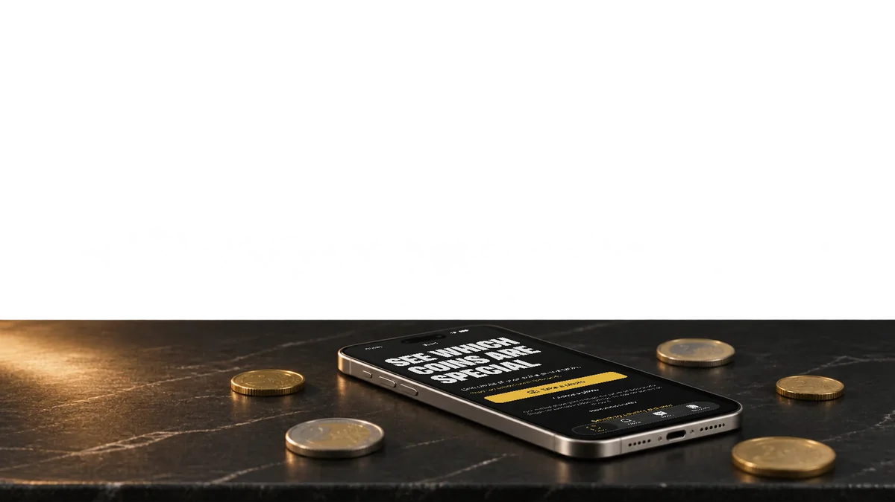
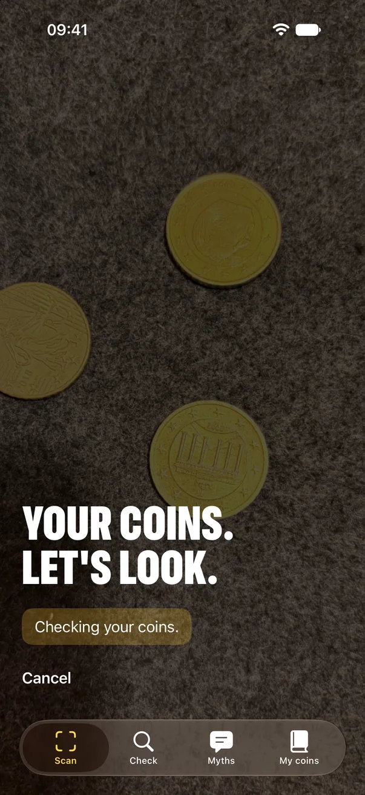
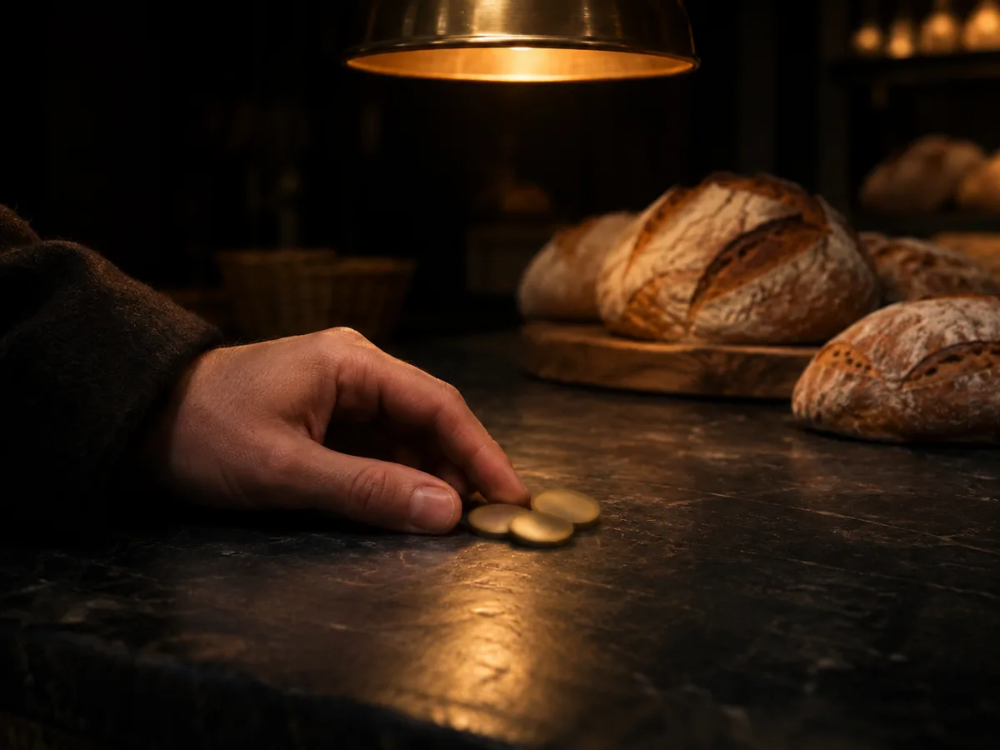
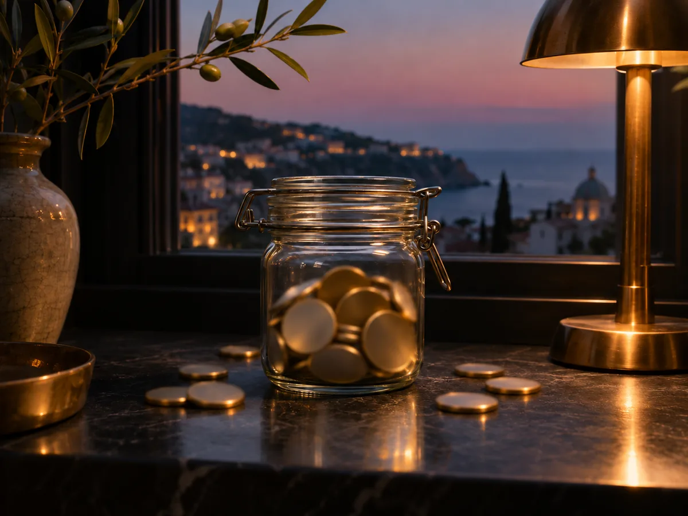
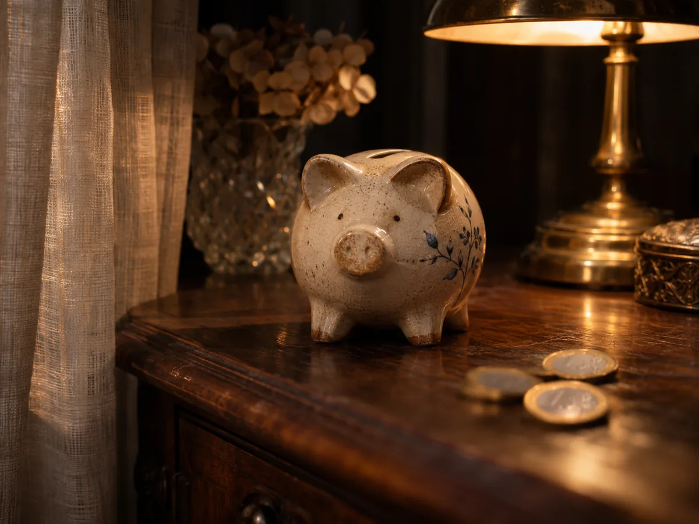
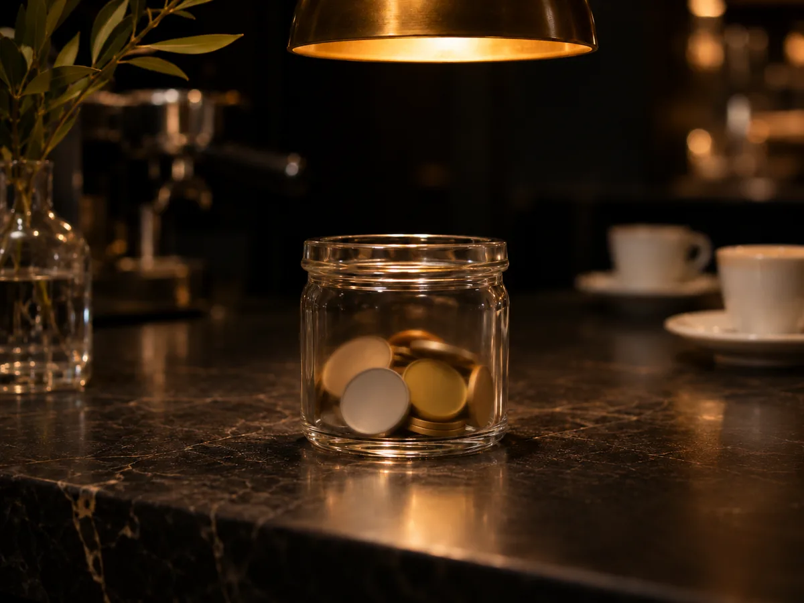

For the find in your pocket
IS YOUR CHANGE
WORTH MORE?

One photo shows which coins are special.
Free to try.
 Now on the App Store. Amsterdam, after closing time.
Now on the App Store. Amsterdam, after closing time.The scan
PUT IT
ON THE TABLE.
Take a photo of your coins. National sides facing up.
The scan
THREE COINS.
TAKE A LOOK.
The app marks the coins in the photo. You take a closer look.
The scan
WHICH ONE
IS YOURS?
Compare the details with your own coin. Country, year and version matter.
Separate catalogue example
AND THEN.
THE REVEAL.
One swipe and you see it. Usually an ordinary coin. Sometimes a surprise. Catalogue example: Finland, 2 euro 2004.
The collection
IN YOUR COLLECTION.
Save the coin with its verdict and estimated value. Your collection starts here.

EU enlargement
uncirculated
An indication, not a sale price.
Finland · 2 euro · 2004
Demonstration using a real scan
The origins
EVERY POCKET
HAS A STORY.
What has been hiding among your small change.





“GIVE IT A POLISH. IT WILL BE WORTH MORE.”
× False
Cleaning or polishing lowers the collector value. Leave it as it is.
FROM A LOOSE COIN
TO YOUR OWN FIND.
A photo. A verdict. A place in your collection.
YOUR PHOTO DOES NOT
BECOME AN ARCHIVE.
The app and our server do not store the submitted photo. For processing, your photo goes through our server to Anthropic. Anthropic’s retention policy applies there. An existing photo stays in your photo library.
Read about your data ↗
One payment. Yours.
Try it free and search as much as you like. Want to see everything? Unlock it once. No subscription, no more guessing. You see the price in the App Store.
Explore the scan ↗EUROREVEAL
Know what you have, before it disappears into the jar again.
A place for your euro coins.